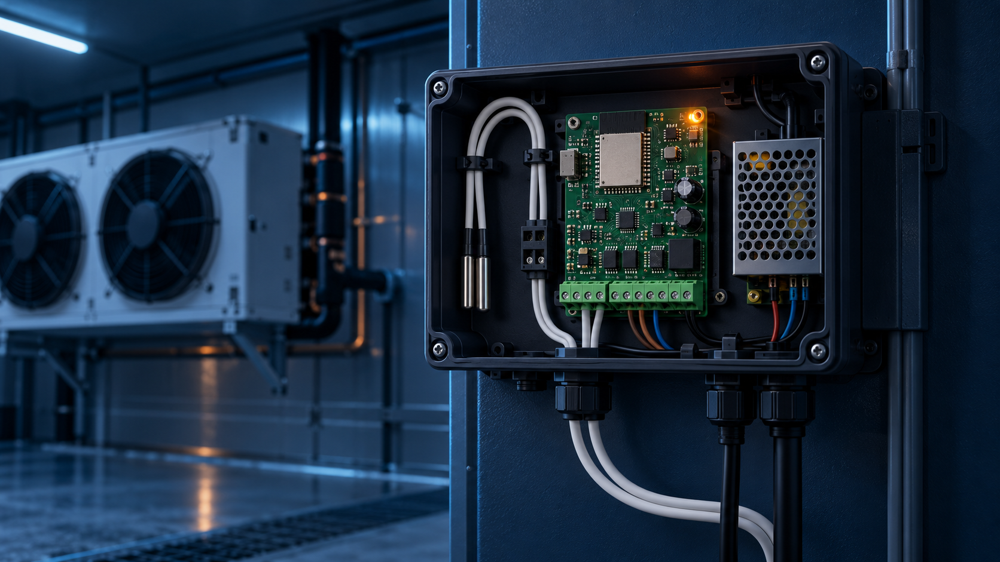

Температура онлайн
Показания с камер, витрин или рефрижераторов доступны в едином интерфейсе.
Подключаем удалённый мониторинг холодильных камер, рефрижераторов и складов. Вы видите показатели, историю и отклонения без выезда к объекту.

Система фиксирует температуру и помогает быстро заметить отклонение. Руководитель видит картину по объектам, а инженер получает данные для точной диагностики.
Показания с камер, витрин или рефрижераторов доступны в едином интерфейсе.
Настраиваем оповещения при выходе температуры за заданный диапазон и других событиях.
Сохраняются изменения показаний — можно увидеть динамику и разобраться в ситуации.
Проверяйте состояние оборудования на объекте, в дороге или из офиса.
Объединяем камеры, транспорт и точки в одну систему, если это нужно бизнесу.
Подберём датчики, схему контроля и порядок внедрения под ваше оборудование.
Контроллер получает данные от датчиков температуры, передаёт их в защищённый интерфейс и помогает вовремя увидеть отклонение. Схема показывает принцип работы — состав оборудования подбираем под конкретный объект.
Не ставим систему «вслепую»: уточняем тип оборудования, критичные точки, нужные уведомления и кому нужен доступ.
Пришлите тип оборудования, количество камер или автомобилей и город. Подскажем, с чего начать.